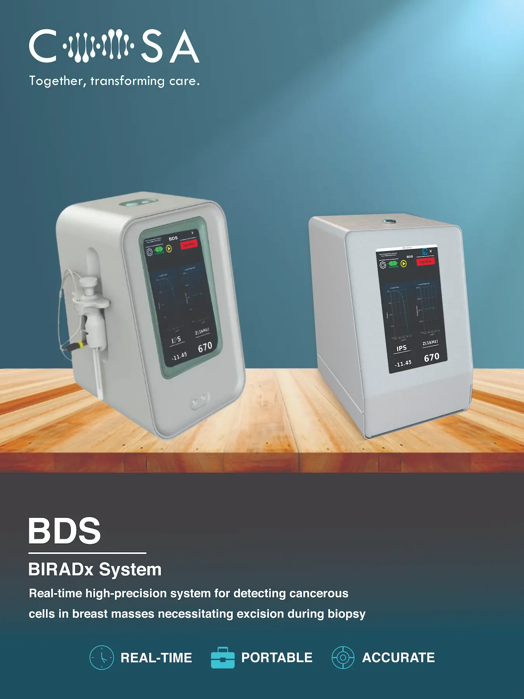
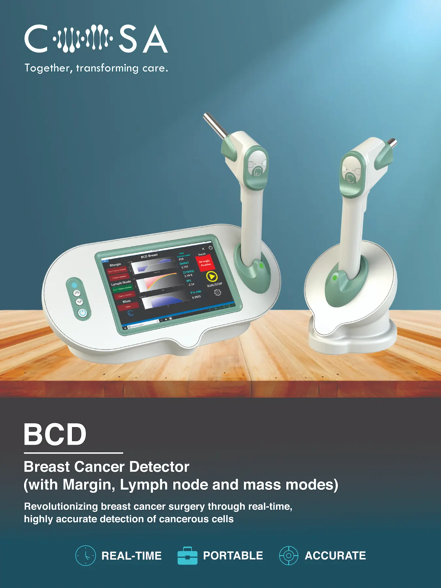
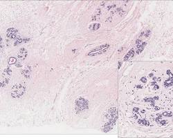
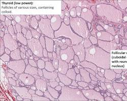
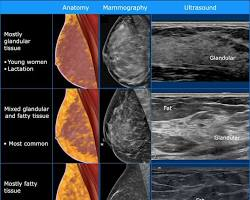
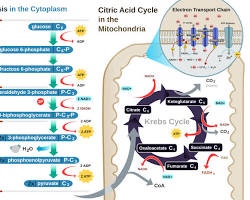
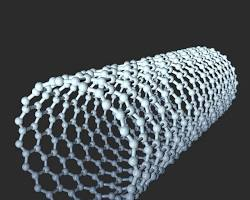

National Recognition
Coosa has been showcased as a deep-tech medical engineering innovator at Startup Mahakumbh, Bharat Mandapam, New Delhi.
- Startup Mahakumbh Innovator
- BIRAC bio-innovation ecosystem alignment
- DPIIT & MCA registered venture
When pathology reports return days after surgery, patients can face the emotional and clinical trauma of a second operation. Powered by proprietary ROS bio-electronic detection, Coosa Technologies equips surgeons with real-time intraoperative margin information before the wound is closed.
Coosa Technologies brings together deep-tech innovation, validated clinical performance, and global intellectual property standards to move critical surgical decisions closer to the point of care.
Our progress is measured through clinical performance, responsible engineering, and the institutions and standards that support adoption.
Coosa has been showcased as a deep-tech medical engineering innovator at Startup Mahakumbh, Bharat Mandapam, New Delhi.
Real-time molecular discrimination supports margin evaluation and sentinel lymph-node assessment during surgery.
Our sensor architecture is built around protected bio-electronic innovation and clinical-grade quality systems.
A growing hospital-facing supply network supports dependable delivery of instruments and sterile consumables.
Intraoperative sensing supports cavity and nodal assessment before closure.
Probe-based scoring complements ultrasound guidance for ambiguous lesions.
Rapid triage leaves tissue architecture available for definitive pathology.
Point-of-care information can support OR scheduling and reduce avoidable delays.
Two bio-electronic platforms spanning the breast cancer pathway—from pre-operative lesion stratification to intraoperative margin and lymph-node assessment.

Real-Time Ultrasound Biopsy Stratification
Under direct ultrasound guidance, BDS differentiates ambiguous BI-RADS 3 lesions from high-risk pathology before surgical incision, helping clinicians target the most informative tissue in dense fibroglandular breasts.
Bio-electronic impedance profiling under ultrasound needle guidance, designed to preserve the tissue for standard pathology.

Real-Time Margin & Lymph Node Assessment
BCD is used inside lumpectomy cavities and on regional axillary lymph nodes during breast-conserving surgery. Its catalytic array reads metabolic ROS and H₂O₂ activity in under 15 seconds while preserving specimen architecture for pathology.
Functionalized multi-walled carbon nanotube arrays are designed to generate a calibrated micro-amperometric readout at a 2.1 mm contact depth within a sterile workflow architecture.
Follow the clinical questions and bio-electronic research themes shaping Coosa's diagnostic platforms.

A clinical perspective on separating benign structural changes from early molecular signals that warrant closer diagnostic review.
Explore diagnostic platforms →
Examining how endocrine context can inform tissue characterization in radiologically dense breast tissue.
Read the R&D approach →
How ultrasound-guided bio-electronic profiling supports a more informed biopsy and excision pathway.
View the BDS system →
Exploring the relationship between benign epithelial metabolism and extracellular redox activity.
View the sensing journey →
A research digest on breast density, cellular redox behavior, and the signals that guide future platform development.
Meet Coosa Meditech →We engineer real-time, cellular-level diagnostic and therapeutic platforms that empower surgeons and oncologists at the point of care. By converging bio-electronic sensing, catalytic nanotechnology, and electrochemical detection, Coosa transforms surgical precision while helping preserve healthy tissue.
When pathology results arrive days after surgery, patients can face the emotional and clinical trauma of a second operation. Coosa’s Breast Cancer Detector (BCD) brings the decision into the operating room by analyzing catalytic Reactive Oxygen Species (ROS) and cellular metabolic markers with multi-wall carbon nanotube micro-sensor arrays.
The result is actionable intraoperative margin verification in seconds—before the wound is closed, and without compromising the specimen for definitive pathology.
Intraoperative ROS/H₂O₂ margin assessment.
Ultrasound-guided biopsy stratification.
Point-of-care thyroid nodule profiling.
Endoscopic early-stage lesion screening.
Non-invasive cervical dysplasia detection.
Cool hemostasis and electro-oncology navigation.
Our catalytic sensing arrays and multi-walled nano-electrode interfaces are backed by granted US patents and developed within an ISO 13485-aligned quality management track with technical documentation aligned to CE Mark frameworks.
Incorporated under the Ministry of Corporate Affairs in New Delhi and recognized as an innovator at Startup Mahakumbh.
Authorized partner managing institutional delivery of instruments and sterile single-use probe tips across hospitals and cancer centers.
Bringing clinical ambition, scientific depth, and operational discipline together to move oncology decisions closer to the point of care.
Leading Coosa’s institutional growth, clinical partnerships, and pathway from bio-electronic innovation to adoption.
Originating Coosa’s bio-electronic vision and the scientific foundation behind its oncology platforms.
Connecting clinical value, institutional partnerships, and the commercial pathway for Coosa’s platforms.
Supporting strategic direction, operating discipline, and the systems required for reliable clinical deployment.
Advancing quality, documentation, and regulatory readiness for medical device adoption.
Coosa is actively testing and validating its technology with leading medical and research institutions in India and abroad.
Follow the diagnostic sequence from pre-operative stratification through intraoperative verification, pathology correlation, and the next generation of Coosa platforms.
Under direct ultrasound guidance, the BIRADx fine-needle probe is advanced into ambiguous BI-RADS 3 or BI-RADS 4 fibroglandular breast lesions. Real-time bio-impedance profiling stratifies lesions prior to surgical intervention, preventing unnecessary core needle biopsies in low-risk patients.
Bio-electronic fine-needle interrogation for indeterminate thyroid nodules under sonography.
Objective spectral bio-sensing for cervical dysplasia, bypassing visual colposcopy subjectivity.
Endoscopic probe integration for mucosal margin discrimination during direct lesion resection.
Pulsed electro-permeabilization to enhance localized chemotherapeutic uptake in solid lesions.
Direct dispatch terminal for surgical oncology departments, pathology boards, and institutional review committees.